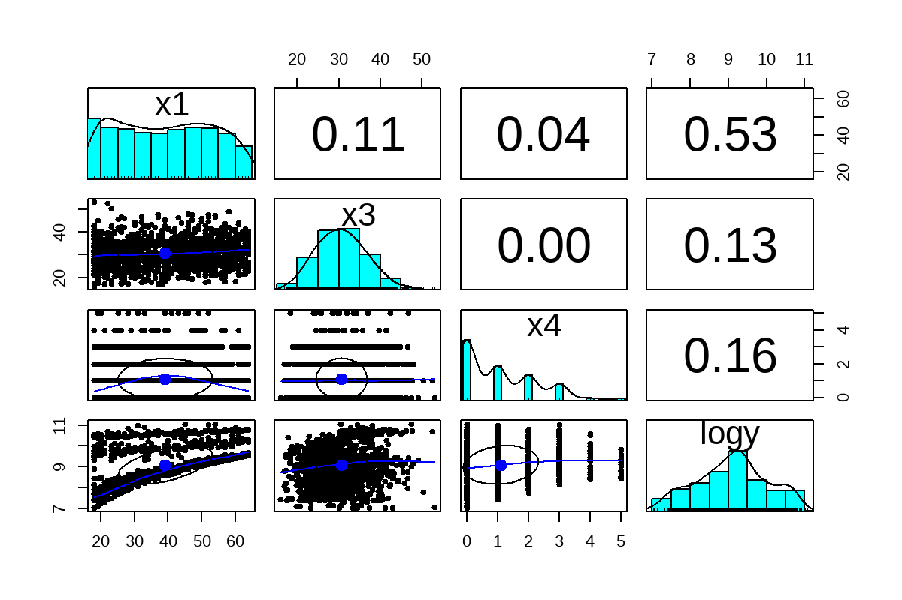

library(tidyverse)
library(data.table)
library(showtext)
library(ragg)
library(psych)
theme_set(theme_minimal())
## 글꼴 추가 및 셋팅
font_path <- "C:/Users/lgc/AppData/Local/Microsoft/Windows/Fonts/KoPub Dotum Light.ttf"
font_add(family = "kopub", regular = font_path)
## 이미지 저장 폰트 화질 및 크기 고정
showtext_opts(dpi = 200)
showtext_auto()
## R 그래프 이미지 그릴 시 기본 셋팅
options(repr.plot.width = 6, repr.plot.height = 4, repr.plot.res = 200) PR
Package
Data load
data <- fread('medical_insurance.csv')
glimpse(data)Rows: 2,772 Columns: 7 $ age <int> 19, 18, 28, 33, 32, 31, 46, 37, 37, 60, 25, 62, 23, 56, 27, 1… $ sex <chr> "female", "male", "male", "male", "male", "female", "female",… $ bmi <dbl> 27.900, 33.770, 33.000, 22.705, 28.880, 25.740, 33.440, 27.74… $ children <int> 0, 1, 3, 0, 0, 0, 1, 3, 2, 0, 0, 0, 0, 0, 0, 1, 1, 0, 0, 0, 0… $ smoker <chr> "yes", "no", "no", "no", "no", "no", "no", "no", "no", "no", … $ region <chr> "southwest", "southeast", "southeast", "northwest", "northwes… $ charges <dbl> 16884.924, 1725.552, 4449.462, 21984.471, 3866.855, 3756.622,…
Data processing
1 컬럼명 변경
data <- data %>%
rename(
y = charges,
x1 = age,
x2 = sex,
x3 = bmi,
x4 = children,
x5 = smoker,
x6 = region
)2 문자형 변수 factor 처리
data <- data %>%
mutate_if(is.character, as.factor)EDA
반응변수(의료비) 분포 확인
1 Y 분포
fig1 <- data %>%
ggplot(aes(x = y)) +
geom_histogram(bins = 40, color = 'darkblue', fill = 'steelblue', alpha = 0.8) +
labs(
title = 'Histogram of Charge(Y) ',
y = '빈도',
x = '단위: 달러($)'
) +
theme(
text = element_text(family = 'kopub'),
plot.title = element_text(size = 24, face = 'bold', hjust = 0.5),
axis.title = element_text(size = 18),
axis.text.x = element_text(size = 14),
axis.text.y = element_text(size = 14),
axis.title.y = element_blank()
)
ggsave(filename = "Figure/01. 반응변수 분포1.png",
plot = fig1,
units = "mm",
dpi = 200,
width = 170,
height = 170)2 log(y) 분포
fig2 <- data %>%
ggplot(aes(x = log(y))) +
geom_histogram(bins = 40, color = 'darkblue', fill = 'steelblue', alpha = 0.8) +
labs(
title = 'Histogram of Charge(Y) ',
y = '빈도',
x = '단위: 달러($)'
) +
theme(
text = element_text(family = 'kopub'),
plot.title = element_text(size = 24, face = 'bold', hjust = 0.5),
axis.title = element_text(size = 18),
axis.text.x = element_text(size = 14),
axis.text.y = element_text(size = 14),
axis.title.y = element_blank()
)
ggsave(filename = "Figure/02. 반응변수 분포2.png",
plot = fig2,
units = "mm",
dpi = 200,
width = 170,
height = 170)data$logy <- log(data$y)상관분석
pairs.panels(x = data %>%
select_if(is.numeric) %>%
select(-y))
png(filename = "Figure/03. 상관분석.png", width = 800, height = 800, res = 200)
pairs.panels(x = data %>%
select_if(is.numeric) %>%
select(-y))
dev.off()
agg_record_1ee06bb018fa: 2
Modeling
로그변환 전후 비교
1 기본적인 다중 선형 회귀모델 적합
m1 <- lm(y~., data %>% select(-logy))
m2 <- lm(logy~., data %>% select(-y))summary(m1)
Call:
lm(formula = y ~ ., data = data %>% select(-logy))
Residuals:
Min 1Q Median 3Q Max
-11489 -2789 -1016 1340 29867
Coefficients:
Estimate Std. Error t value Pr(>|t|)
(Intercept) -11635.451 686.885 -16.939 < 2e-16 ***
x1 255.577 8.268 30.913 < 2e-16 ***
x2male -56.944 231.866 -0.246 0.80602
x3 330.015 19.869 16.609 < 2e-16 ***
x4 506.343 95.164 5.321 1.12e-07 ***
x5yes 23976.197 288.461 83.118 < 2e-16 ***
x6northwest -331.841 334.380 -0.992 0.32109
x6southeast -1078.362 334.418 -3.225 0.00128 **
x6southwest -1055.254 333.121 -3.168 0.00155 **
---
Signif. codes: 0 '***' 0.001 '**' 0.01 '*' 0.05 '.' 0.1 ' ' 1
Residual standard error: 6073 on 2763 degrees of freedom
Multiple R-squared: 0.7509, Adjusted R-squared: 0.7502
F-statistic: 1041 on 8 and 2763 DF, p-value: < 2.2e-16summary(m2)
Call:
lm(formula = logy ~ ., data = data %>% select(-y))
Residuals:
Min 1Q Median 3Q Max
-1.05374 -0.20306 -0.05006 0.06322 2.17807
Coefficients:
Estimate Std. Error t value Pr(>|t|)
(Intercept) 7.0390040 0.0505736 139.183 < 2e-16 ***
x1 0.0346210 0.0006087 56.875 < 2e-16 ***
x2male -0.0748546 0.0170717 -4.385 1.20e-05 ***
x3 0.0130682 0.0014629 8.933 < 2e-16 ***
x4 0.1027302 0.0070067 14.662 < 2e-16 ***
x5yes 1.5629835 0.0212387 73.591 < 2e-16 ***
x6northwest -0.0558979 0.0246196 -2.270 0.0233 *
x6southeast -0.1687408 0.0246224 -6.853 8.87e-12 ***
x6southwest -0.1351874 0.0245269 -5.512 3.88e-08 ***
---
Signif. codes: 0 '***' 0.001 '**' 0.01 '*' 0.05 '.' 0.1 ' ' 1
Residual standard error: 0.4472 on 2763 degrees of freedom
Multiple R-squared: 0.7666, Adjusted R-squared: 0.7659
F-statistic: 1134 on 8 and 2763 DF, p-value: < 2.2e-16